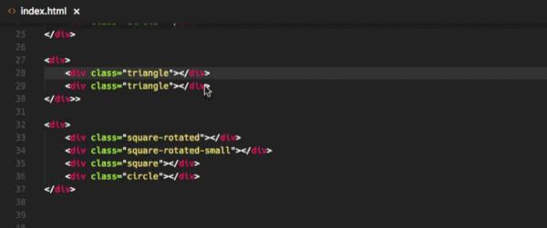

1、浏览器兼容 早期浏览器的 css 、dom 兼容性;浏览器未支持的 html5 api、css3 属性、es5、es6 特性
2、硬件设备、网络
开发疏忽、沟通问题、流程不规范、用户习惯
1、rem败给了用户习惯：非标准字号
2、vw败给了微信
3、移动端败给了UC
4、不够规范的流程：妖恋项目中遇到的问题
重要步骤：基于参考线的切片
重要步骤：生成——图像资源
使用此插件，你可以追踪至样式表中 CSS 类和 ids 定义的地方。当你在 HTML 文件中右键单击选择器时，选择“ Go to Definition 和 Peek definition ”选项，它便会给你发送样式设置的 CSS 代码。

这是一个用于实时测试正则表达式的实用工具。它可以将正则表达式模式应用在任何打开的文件上，并高亮所有的匹配项。